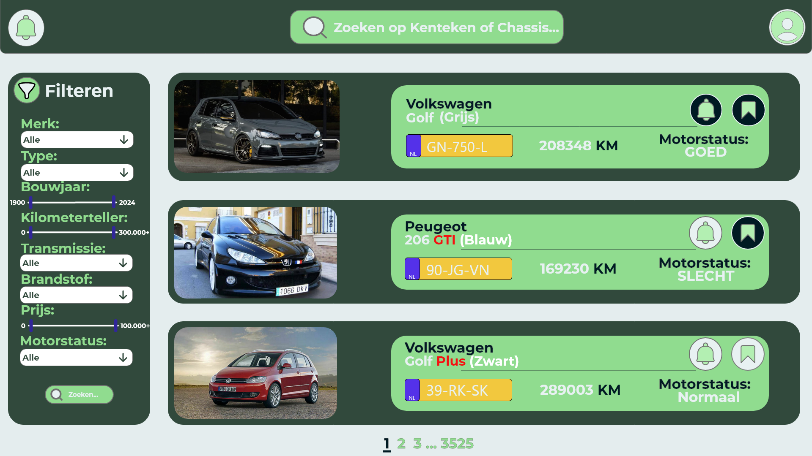
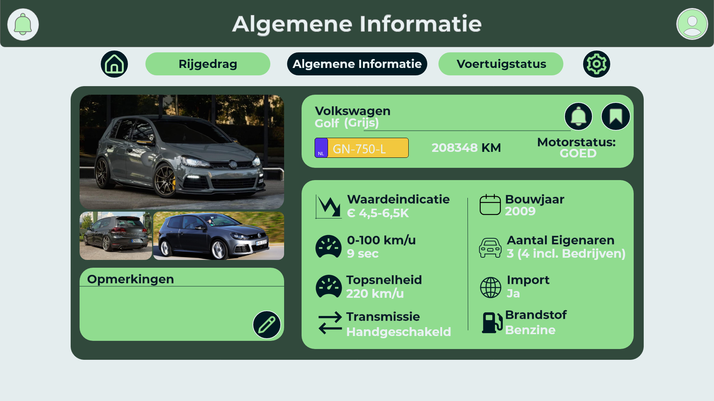
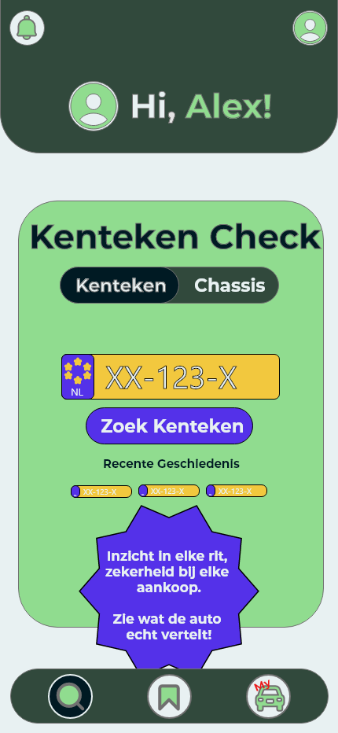
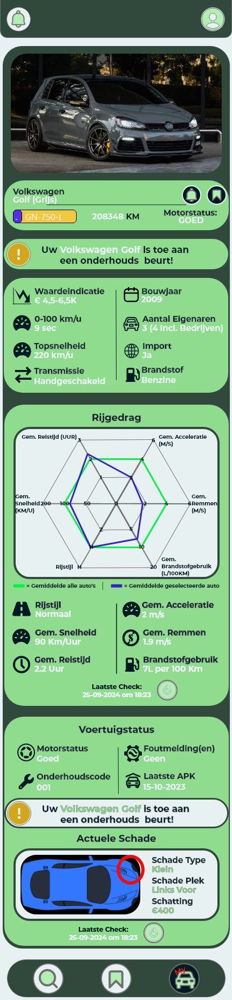

Smart DriveUX/UI for a data platform.




For this assignment I had to design a digital product that shows a ton of data, but in a way that's actually easy to use, and it had to work just as well on desktop as on mobile. Beyond that I got full creative freedom: I could pick my own target audience and come up with whatever concept I wanted, as long as it held up across different screen sizes. Before touching any screens, I wrote out a proper user scenario first, so every decision after that had something to point back to.
I ended up designing AutoInsight, a data platform for the car industry. Think of it as one central place where dealerships, garages, manufacturers, and everyday car owners can all check a vehicle's real-time driving data, maintenance history, and overall condition. The idea is simple: more transparency means fewer surprises, whether you're buying a used car or just trying to figure out if yours needs a service.
Each user group gets something different out of it. Dealers can use the data to back up their sales pitch, garages can spot maintenance issues before they turn into real problems, manufacturers get insight into recurring issues across their models, and regular consumers finally get a clear picture of a car's history before buying it.
The tricky part was fitting all that information into an interface that doesn't feel overwhelming. I went through a bunch of wireframes and layout options before landing on something that actually felt clean, paying close attention to hierarchy, color coding, and spacing so people could scan the important stuff quickly. Everything was built and prototyped in Adobe XD.
This project taught me a lot about designing for more than one type of user at once, and how to turn a pile of technical data into something that actually looks good and makes sense at a glance.